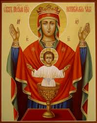
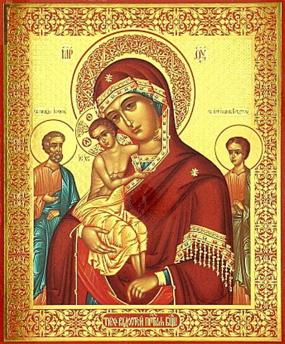

Тема Святой литургии очень важна. Та молитва на Святой литургии, в которой говорится, что никто из
связанных плотскими желаниями и наслаждениями недостоин приступить и служить Святую литургию, относится и к
тем, кто собирается говорить о Святой литургии. Но кто же тогда достоин говорить о Святой литургии – этом
таинстве, в которое даже Ангелы желают вникнуть и взирают на него со страхом и ужасом? Мы точно недостойны
говорить об этом, тем паче что и переживаем это не так, как следовало бы. Пусть мы и клирики, как, в данном
случае, я.
Помню признание одного служителя алтаря, когда я еще был малым ребенком. Он доверительно сказал мне тогда:
– Деточка моя, когда я однажды поехал на Святую Гору Афон и исповедался у одного иеромонаха, то он спросил меня:
«Отче, а сколько лет ты служишь?» – «Тридцать», – ответил я. «А сколько раз на литургиях, которые ты служил, ты
ощущал таинство, душа твоя входила в святилище Божие, ты что-нибудь понимал в мире сверхъестественного, ощущал
что-нибудь удивительное и таинственное?» Я ответил: «Отче, очень редко. Служил сотни раз, но таинства каждый раз
не ощущал, это нелегко».
Да, это нелегко. Это зависит и от нас, нашей подготовленности, но и от Бога тоже, чтобы Он приблизился к нам и
счел нас достойными этого проявления Своей любви.
Один протестантский пастор как-то встретил православного священника и сказал ему:
– Мы, протестанты, занимаемся благотворительностью, строим дома для престарелых, социальные заведения, залы,
больницы, организуем концерты поп- и рок-музыки и привлекаем молодых, проводим экскурсии, мы очень активны. А
вы, православные клирики и Православная Церковь, что делаете вы?
А священник, вместо того чтобы перечислять ему разные виды пастырской работы, сказал лишь одну короткую фразу:
– Мы, православные, служим Святую литургию.
Мы делаем это и наполняем рай людьми, душами, которые спасаются. Мы утешаем людей, сводим Бога на землю и
возводим людей на небеса. Это наш вклад, это то бесконечно важное, что Церковь дает миру. Самое важное. Это
источник, из которого проистекают и остальные дела Церкви.
Всё начинается с того момента, когда мы слышим, что бьют в колокол. С него начинается Святая литургия, всякое
богослужение вообще. Мы слышим, что звонит колокол.
У нас на приходе есть один человек, который испытывает огромную радость, когда у него появляется возможность
позвонить в колокол. У колокола этого есть механизм, воспроизводящий разные мелодии: благовест, праздничную,
святогорскую. И он предвкушает это с великой радостью, как маленький ребенок, и говорит:
– Отче, сегодня я запущу радостный благовест, чтобы люди услышали и пришли в церковь.
Этот момент поистине великолепен. Надо, однако, заметить, что когда-то колоколов не было. В Церкви в первые годы
ее существования люди просто звали друг друга. А потом, когда возросло число христиан, появились клепала.
Позднее в некоторых местах использовали трубы – например, в монастыре, основанном святым Пахомием Великим, – в
них трубили, чтобы напоминать христианам о трубах Апокалипсиса. В нем говорится, что Второе Пришествие будет
происходить так: затрубят трубы, и все люди воскреснут, чтобы предстать на Суд.
В эпоху святого Константина Великого в ходу были железные клепала, по которым ударяли молотком. Колокола впервые
появились на Западе, а в Константинополь попали в 865 году, намного позже постройки Святой Софии. Тогда один
венецианский вельможа подарил 12 колоколов храму Святой Софии. Они называются кампанами[2], потому что
происходят из Кампании, области в Италии.
Тема Святой литургии очень важна. Та молитва на Святой литургии, в которой говорится, что никто из
связанных плотскими желаниями и наслаждениями недостоин приступить и служить Святую литургию, относится и к
тем, кто собирается говорить о Святой литургии. Но кто же тогда достоин говорить о Святой литургии – этом
таинстве, в которое даже Ангелы желают вникнуть и взирают на него со страхом и ужасом? Мы точно недостойны
говорить об этом, тем паче что и переживаем это не так, как следовало бы. Пусть мы и клирики, как, в данном
случае, я.
Помню признание одного служителя алтаря, когда я еще был малым ребенком. Он доверительно сказал мне тогда:
– Деточка моя, когда я однажды поехал на Святую Гору Афон и исповедался у одного иеромонаха, то он спросил меня:
«Отче, а сколько лет ты служишь?» – «Тридцать», – ответил я. «А сколько раз на литургиях, которые ты служил, ты
ощущал таинство, душа твоя входила в святилище Божие, ты что-нибудь понимал в мире сверхъестественного, ощущал
что-нибудь удивительное и таинственное?» Я ответил: «Отче, очень редко. Служил сотни раз, но таинства каждый раз
не ощущал, это нелегко».
Да, это нелегко. Это зависит и от нас, нашей подготовленности, но и от Бога тоже, чтобы Он приблизился к нам и
счел нас достойными этого проявления Своей любви.